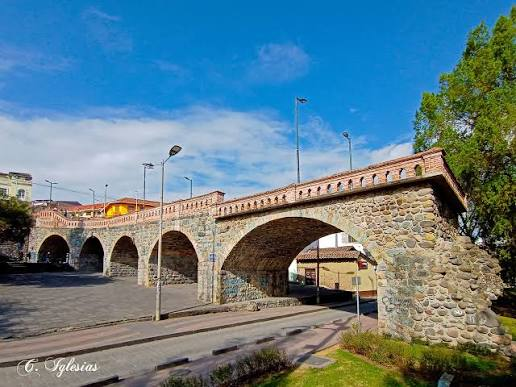
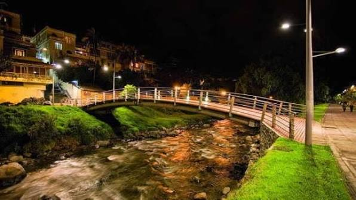

Atractivos principales
- Catedral de la Inmaculada Concepción
- Puente Roto
- Río Tomebamba y sus riberas
- Parque Calderón
- Mirador de Turi


| Lugar | Tipo | Horario |
|---|---|---|
| Catedral | Religioso | 09:00 - 18:00 |
| Puente Roto | Histórico | Libre |
| Mirador de Turi | Mirador | Libre |
| Parque Calderón | Plaza | Libre |
Nota: los horarios pueden cambiar.